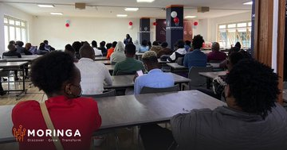
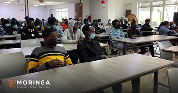
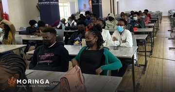

Congratulations to our Access Program students Cohort
MC54-58 who have graduated today! Thank you to
@MastercardFdn who have made this a reality to
all the +120 graduates! Moringa, wishes you all the best!
#MoringaSchool#mastercardfoundation#scholarships



Moringa School
@Moringaschool .
july
more_horiz
A warm welcome to our newest cohort of 110+ students who
joined us through the Moringa Access Program on June 27th.
All this made possible through @MastercardFdn ,
we are impacting the lives of young Kenyans one at a time by
providing scholarships to study Software Engineering.